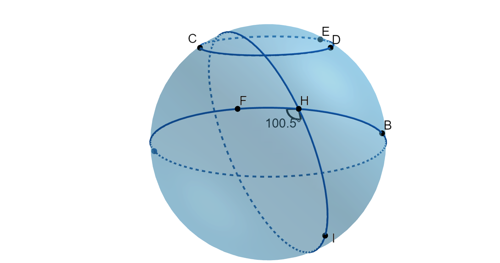
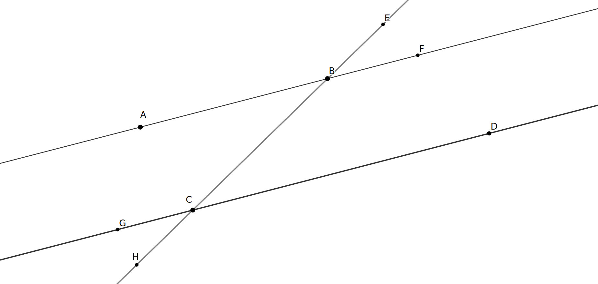

What does it mean for two lines to be parallel? Remembering that lines continue indefinitely, we define two lines in the same plane to be parallel if they never intersect. In this section, we will look more closely at this definition, explore properties related to parallel lines, and explore what lines look like in other geometries.
Subsection2.3.1What do we remember about lines on a plane?
Exploration2.3.1.Reflecting on Prior Understanding.
(a)
In your own words, write three different endings to the statement, “A line is ...”. Compare your responses to that of your classmates.
Hint.
There are no right or wrong answers!
(b)
Complete the following sentences:
The sum of the measures of the interior angles of any triangle is ...
Two lines in the plane are parallel if ...
Answer.
This question is also designed to lead to discussion without judgement. Students usually agree on 180 degrees for the sum of the measures of the angles in a triangle. They should give a variety of ideas on what parallelism means. For a later question, we will use nonintersecting to define parallel lines.
Subsection2.3.2Geometry on Another Surface
In school, we typically consider lines to lie on a flat surface called a plane. While most of this textbook will follow this tradition, we take a brief departure from planar geometry in this section. The world we live on is not flat; it is roughly spherical. What objects might act like lines on the surface of a sphere? Do spherical lines have the same properties as lines on a plane? One could also study the behavior of lines in our universe: Are they straight or do they bend? What can we say about parallel lines in these environments? Do our familiar properties hold?
Exploration2.3.2.Defining Lines on a Sphere.
For this activity and the one that follows, you will need a small sphere, some rubber bands large enough to go around your sphere, a protractor, a marker, and a piece of thread. Possible “spheres” include styrofoam balls, oranges, rubber balls, or spheres sold by math education supply companies. Aim for a sphere around the size of a softball. A smooth surface is best, but any small ball will suffice. As an alternative, you may use a ribbon with a globe where latitude and longitude lines are marked.
(a)Envisioning Lines on a Sphere.
We do not live on a plane; we live on a sphere. Let’s predict what objects on a sphere might act as lines. These lines will lie on the surface of the sphere. They will not pass through the sphere nor will they project out into space. What are some examples of things that might pose as “lines” on a sphere? Which of your descriptions in Task 2.3.1.a do they satisfy?
(b)
You have probably heard the expression, “The shortest distance between two points lies along a line.” We shall use this property of line segment to determine which linear features on a sphere act as lines and line segments. Suppose you have plans to fly from Chicago, Illinois (41.8781N, 87.6298W) to Rome, Italy (41.9028N,12.4964E). There are many paths you could take; some might qualify as lines under your suggestions above. Which path gives the shortest distance from Chicago to Rome? If a globe is available, find Chicago and Rome and experiment with a string to find the path of least distance. If you do not have a globe, mark the approximate locations of Chicago and Rome on your sphere; each should be midway between the equator and the North Pole, with Rome approximately a quarter of the way around east of Chicago. Tighten the string connecting these two cities to observe the path of shortest distance between them.
Describe this line segment. Does it follow a latitude line? Bend toward the North Pole? Bend toward the equator?
Allow this “line” to extend “forever” beyond the two points. What figure does it form? How is this figure related to the sphere itself?
Answer.
1. The line segment does not follow the latitude line. It bends toward the North Pole.
2. The line extends to a circle around the sphere with the same radius and center.
The lines on a sphere are simply the great circles. A great circle is a circle on a sphere that has the same diameter as the sphere itself. If you were to cut a sphere along a great circle, you would split the circle into two hemispheres of the same size. Restrict yourself to this definition of line for the next exploration.

Figure2.3.1.Spherical objects
Exploration2.3.3.Properties of Spherical Lines and Triangles.
(a)
Which latitudes, if any, will be lines (great circles) on a sphere?
(b)
Which longitudes, if any, will be lines on a sphere according to this definition?
(c)
In Section 1.2, we defined two lines to be parallel if they lie in the same plane and do not intersect. Spherical lines will be parallel if they lie on the sphere and do not intersect.
Choose any point on the sphere which is not on the equator. Can you construct a spherical line through this point that does intersect the equator? Explain.
(d)
What do you expect to be true about the sum of the interior triangles of a spherical triangle? On your sphere, plot three points that do not lie on the same line and connect them with spherical lines (rubber bands) to form spherical triangles. Make sure that each rubber band is as straight as possible, forming a great circle.
(e)
To measure the angles on a sphere, pass a piece of thread through the vertex hole of a protractor and tie it securely. Hold the protractor with that hole at the vertex of the angle you wish to measure, aligning the baseline of the protractor with one side of the angle. By pulling the thread tight and visually aligning it with the second side of the angle, you should be able to read the measure on the protractor as demonstrated in Figure 2.3.2.
Record the measurements of each of the three angles of your triangle and then add the three measures.
Angle A:
Angle B:
Angle C:
Sum:
Hint.
Don’t force the sum to be 180 degrees. Results on a sphere may be different than on a plane.
(f)
Repeat the last task two more times so that you have computed the sum of the measures of the angles for at least three different triangles. Record your measurements and sums. What do you notice?
Hint.
You should find that spherical triangles behave differently from triangles in the plane.
(g)
What is the largest triangle you can make on the sphere? Describe it and then determine the sum of its interior angles.
Hint.
You get to define “largest” here and your definition may differ from that of other classmates. Hence, your results may also differ!
(h)
Make a conjecture as to the sum of the measures of the interior angles of a spherical triangle. Test your conjecture with additional triangles.
Figure2.3.2.Measuring Angles on a Sphere
Subsection2.3.3Understanding Parallel Lines
Most likely, Exploration 2.3.2 and Exploration 2.3.3 led to some observations that surprised you. One of the ways in which spherical geometry differs from Euclidean geometry is that no lines on the sphere are parallel. Of course, we could have defined line differently, but that would have led to a loss of other properties of lines, such as the existence and uniqueness of a line joining any pair of points. Hence, we need to be clear regarding the geometry being studied. Except where specified, our work will be limited to Euclidean geometry where lines lie on planes, not spheres. In Euclidean geometry, parallel lines exist. In fact, for each point \(P\) and line \(\ell\) not passing through \(P\text{,}\) we can draw exactly one line through \(P\) that is parallel to \(\ell\text{.}\) We will accept this statement, known as Playfair’s Parallel Postulate, as one of our principles.
Principle2.3.3.Playfair’s Parallel Postulate.
Given a line \(\ell\) and a point \(P\) not on \(\ell\text{,}\) there is one and only one line that passes through \(P\) and is parallel to \(\ell\text{.}\)
Figure2.3.4.Exactly one line through \(P\) parallel to line \(m\text{.}\)
In order to be parallel, two lines must lie in the same plane. If you are reading this indoors, you probably have a wall in front of you and a wall somewhere to your right. The line where the ceiling meets the wall in front of you will never intersect the line formed by the intersection of the floor and the wall to your right. Still, we do not consider these two lines to be parallel because there is no plane containing both lines. Instead, we say that these are skew lines.
Figure2.3.5.Illustrating skew lines as edges on a rectangular room.
Checkpoint2.3.6.Check your Understanding.
Refer to Figure 2.3.5 as you answer the following.
In the figure, it looks like \(\overleftrightarrow{BH}\) and \(\overleftrightarrow{EF}\) should intersect. Explain why they do not intersect when we think of the figure as a three-dimensional rectangular box or room.
Identify a second line (extension of an edge of the box in the picture) that would be considered to be skew to \(\overleftrightarrow{BH}\text{.}\)
How many lines suggested by edges of this box are parallel to \(\overleftrightarrow{BH}\text{?}\) Name them.
We also observed that angle measures in spherical triangles did not behave in the way that Euclidean triangles do. This suggests that the measures of angles may be related to the parallel postulate. Indeed the two concepts are closely connected. In Subsection 2.2.3, we rotated a triangle 180 degrees about a midpoint of one of its sides and again around the midpoint of a second side. We then observed that the three angles formed a line when placed side by side at a vertex. We now look at that exploration in the context of parallelism.
Exploration2.3.4.Alternate Interior Angles.
(a)
In the following application, triangle \(\Delta ABC\) has been rotated 180 degrees about midpoint \(D\) of side \(BC\) to form \(\Delta A'C'B'\text{.}\) Note that point \(B'\) coincides with \(C\) and point \(C'\) coincides with \(B\text{.}\)
Figure2.3.7.An interactive GeoGebra applet for Exploration on Alternate Interior Angles.
What appears to be true about lines \(\overleftrightarrow{AB}\) and \(\overleftrightarrow{CA'}\text{?}\)
What other two lines appear to have this property?
Verify your observation by using the parallel line tool in the app. After selecting parallel lines from the line tool menu, click on the line segment it should be parallel to and then click on the point it should pass through.
(b)
What can we say about the relationship between angles \(\angle A'CB\) and \(\angle ABC\)
In terms of angle measure? How do you know?
In terms of their relationship to the parallel lines, \(\overleftrightarrow{CA'}\) and \(\overleftrightarrow{AB}\) and the line \(\overleftrightarrow{BC}\text{?}\)
In terms of triangle \(\Delta ABC\) and its rotated copy \(\Delta AC'B'\text{?}\)
When a line cuts across two other lines, we call it a transversal of the lines. In Figure 2.3.8, transversal \(\overleftrightarrow{BC}\) cuts across two parallel lines \(\overleftrightarrow{AB}\) and \(\overleftrightarrow{CD}\text{.}\)

Figure2.3.8.Transversal \(\overleftrightarrow{BC}\) cuts across parallel lines \(\overleftrightarrow{AB}\) and \(\overleftrightarrow{CD}\text{.}\)
Definition2.3.9.
When a transversal, such as \(\overleftrightarrow{BC}\) in Figure 2.3.8 cuts across lines \(\overleftrightarrow{AB}\) and \(\overleftrightarrow{CD}\) so that \(A\) and \(D\) are on opposite sides of \(\overleftrightarrow{BC}\text{,}\) angles \(\angle{ABC}\) and \(\angle DCB\) are said to be alternate interior angles.
In Figure 2.3.8, we call \(\angle{ABE}\) and \(\angle{DCH}\) alternate exterior angles since points \(E\) and \(H\) lie on the transversal on opposite sides of the two parallel lines and points \(A\) and \(D\) lie on different parallel lines and on opposite sides of the transversal.
Angles \(ABC\) and \(GCH\) are called corresponding angles because they lie in the same relative position; in this case to the left of the transversal and below a parallel line.
Although we will not give a proof, the following two statements are equivalent to Playfair’s Parallel Postulate. These principles hold in Euclidean geometry where Playfair’s Parallel Postulate is assumed, but fail in non-Euclidean geometries like the Spherical Geometry we studied in Exploration 2.3.2 and Exploration 2.3.3.
Principle2.3.10.Alternate Interior Angles.
Given two parallel lines \(m\) and \(n\) and a line \(t\) that crosses \(m\) and \(n\text{,}\) alternate interior angles have the same angle measure.
Principle2.3.11.Angle Sum of a Triangle.
The sum of the interior angles of any triangle is 180 degrees.
Exercises2.3.4Exercises
Skills and Recall
1.
In Definition 2.3.9, a pair of alternate interior angles, a pair of alternate exterior angles, and a pair of corresponding angles was identified for Figure 2.3.8. Use Figure 2.3.8 to identify the following:
A second pair of alternate interior angles.
A second pair of alternate exterior angles.
Three more pairs of corresponding angles.
2.
In Principle 2.3.10, we claim that alternate interior angles are congruent.
Use this principle to argue that alternate exterior angles \(\angle{ABE}\) and \(\angle{DCH}\) in Figure 2.3.8 have the same angle measure.
Give a thorough argument that corresponding angles \(ABC\) and \(GCH\) in Figure 2.3.8must be congruent.
3.
In Figure 2.3.12, parallel lines \(\overleftrightarrow{AB}\) and \(\overleftrightarrow{CD}\) are cut by transversals \(\overleftrightarrow{AC}\) and \(\overleftrightarrow{BD}\text{.}\) The transversals meet at point \(E\text{.}\) The measure of \(\angle{BAC}\) is 57 degrees and the measure of \(\angle{EDK}\) is 114 degrees.
Suppose that lines \(\ell\) and \(m\) are not parallel (so that they must meet at a point \(C\)) and that line \(\overleftrightarrow{AB}\) cuts \(\ell\) and \(m\) at points \(A\) and \(B\text{,}\) respectively. Let \(D\) be a point on line \(\ell\) on the opposite side of \(\overleftrightarrow{AB}\text{.}\) Explain why \(m(\angle{DAB})\neq m(\angle{CBA}).\)
5.The Hyperbolic Disk Model.
The illustration in Figure 2.3.13 was explored by mathematician H. S. M. Coxeter and used by artist M. C. Escher as a basis for his Circle Limit series of prints. This illustration suggests another type of non-Euclidean geometry, a disc model of hyperbolic geometry. Here, lines are of two types: diameters of the outer disc and circular arcs that meet the outer disc at a right angle 1
The tangents of these circles and the tangent of the outer disc at the point of intersection are perpendicular.
.
In Figure 2.3.14, line \(\overleftrightarrow{AB}\) is the curved arc 2
We ignore the section outside the outer disc. It is include to show how these lines are parts of circles.
shown in orange about halfway between the top and the center, \(C\text{,}\) of the outer disc. Point \(D\) is below the center on the same diameter as \(B\text{;}\) thus, \(\overleftrightarrow{BD}\) is that diameter. Line \(\overleftrightarrow{FG}\) has been drawn to illustrate the fact that not all lines are visible in the design; in fact, given any two points in the interior of the disc, there is one and only one line passing through both points.
(a)
To our Euclidean eyes, line segment \(\overline{AB}\) appears to do which of the following:
be straight
bend in toward the center
bend away from the center
(b)
To our Euclidean eyes, line segment \(\overline{CD}\) appears to do which of the following:
be straight
bend in toward the center
bend away from the center
(c)
Consider triangle \(\Delta ABC\text{.}\) Do you think that the sum of the angle measures will be equal to 180 degrees, less than 180 degrees, or more than 180 degrees?
(d)
Recalling that two lines are said to be parallel, sketch three different hyperbolic lines that are parallel to \(\overleftrightarrow{AB}\) and pass through \(D\text{?}\) You may use points that have not yet been labeled.
(e)
As noted, not all lines are shown in the sketch. In fact, for any two points in the interior of the disc, either a diameter or arced line can be drawn. Do you think there are no lines, exactly one line, several lines, or an infinite number of hyperbolic lines that pass through \(C\) and are parallel to \(\overleftrightarrow{AB}\text{?}\) Support your answer by words and/or illustrations.
Writing Prompts
6.
Write a letter to a friend in which you discuss some of the commonalities and differences between Euclidean and spherical geometry that you learned about in this section. As an optional extension, you might explore some other differences including whether spherical lines are infinite or finite and whether betweenness of points on spherical lines are preserved.